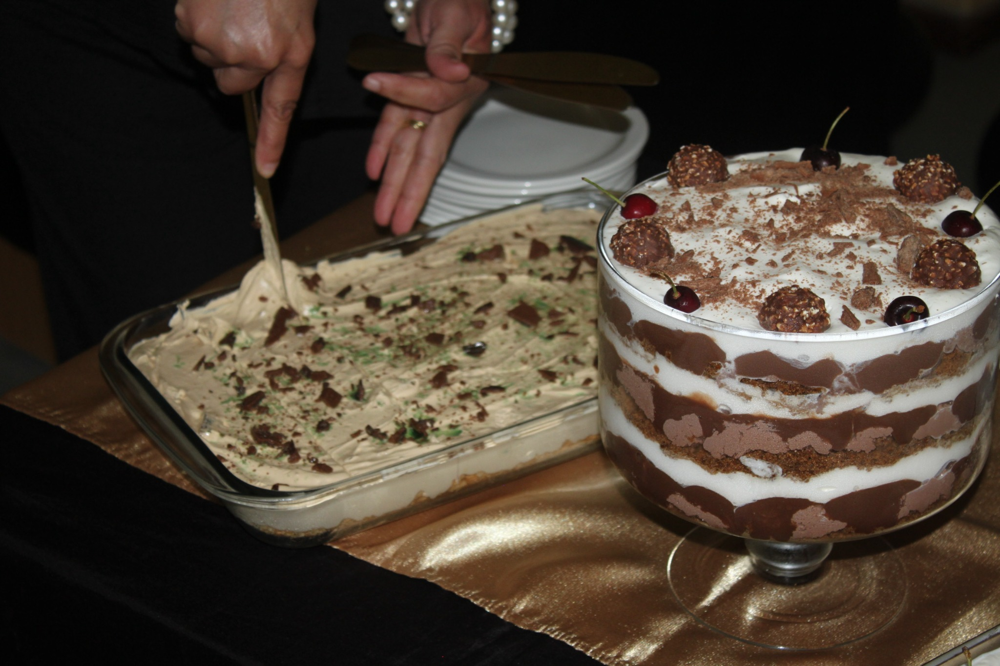
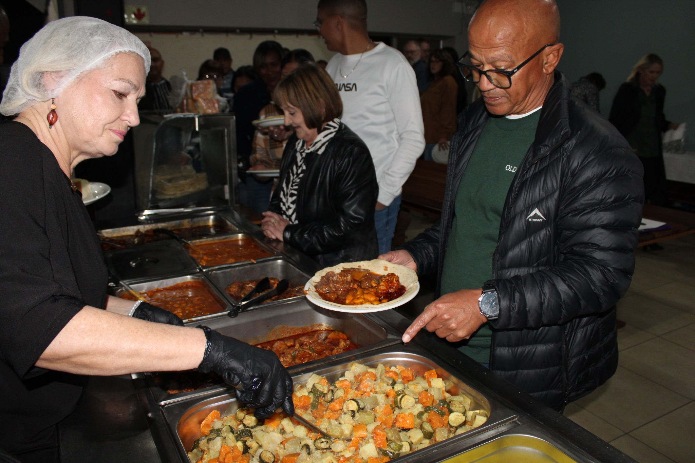
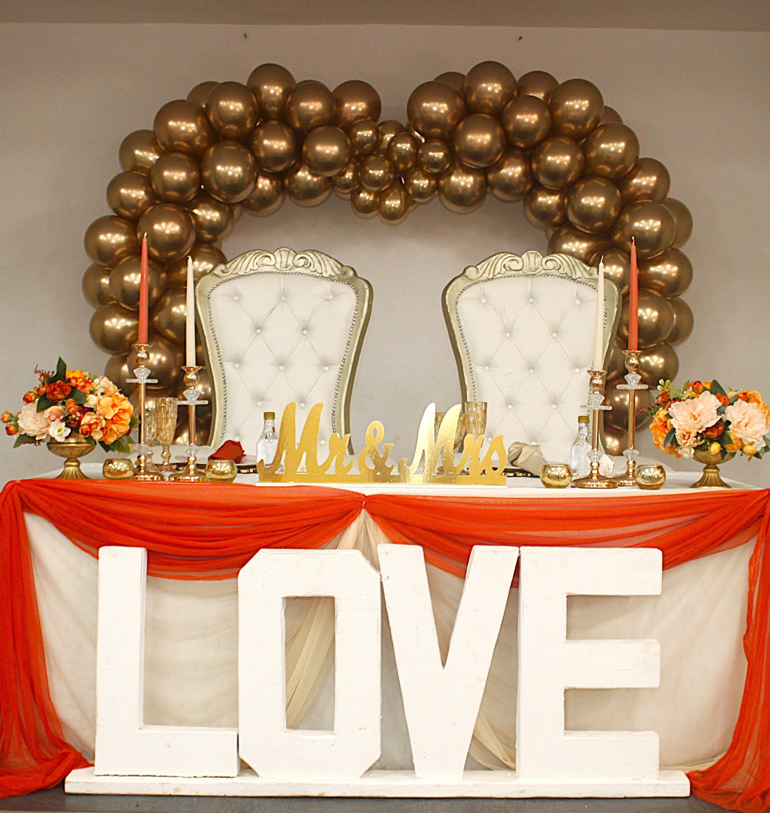
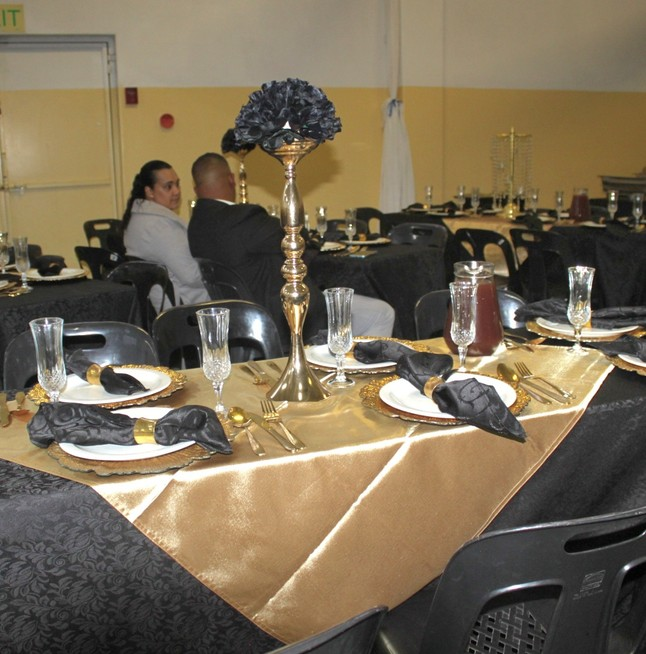

Stellenbosch · Cape Winelands
Moments
worth remembering.
Thoughtful photography for celebrations, meaningful occasions and the details that make them yours.
SELECTED MOMENTS
A little of my work.



01 / About the studio
Stories in every detail.
DKs Photography is an emerging photography business based in Stellenbosch, capturing meaningful celebrations, the people who bring them to life and the details that make each occasion unique.
Our approach combines candid storytelling with careful attention to event styling and atmosphere. Every gallery is thoughtfully selected and professionally edited.

Travel, made clear.
The first 20 km of return travel from our Stellenbosch base are included. Additional distance is charged at R4 per kilometre. Travel costs are confirmed in your quotation before booking.